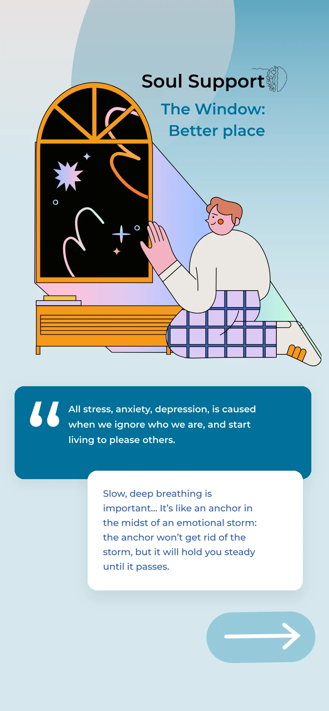
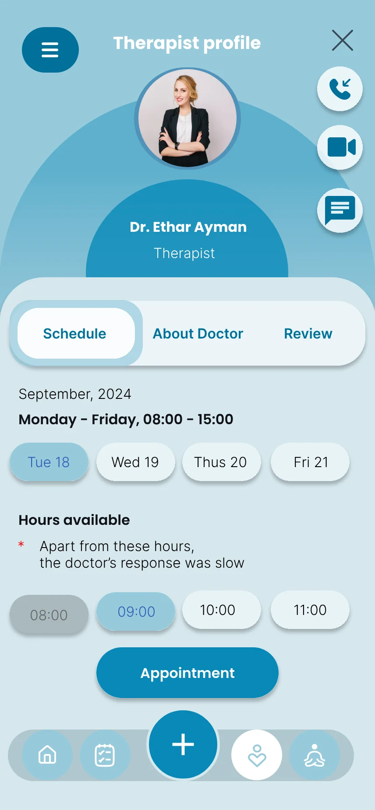

SoulMate AI chatbot
A compassionate conversational AI offering 24/7 emotional support, breathing exercises, and grounding techniques, always one tap away.
SoulSupport is a mobile mental health platform built to bridge the gap between individuals and professional care. It makes support accessible, personalized, and human.



Mental health is widely recognized as critical to overall well-being, yet accessible and personalized care remains out of reach for most people. We asked what a digital system looks like when it genuinely meets people where they are.
High costs, professional shortages, long wait times, and geographic barriers leave millions without the mental health support they need.
Existing apps like Headspace, Calm, and Mindspa each cover a slice of user needs. None offer a comprehensive, AI-driven, therapist-connected platform.
SoulSupport combines AI assistance, real therapist booking, mood tracking, guided exercises, and mental health resources in one place.
A mixed-method phase: an interview with a licensed psychotherapist and a quantitative questionnaire aimed at a diverse demographic.
"Offline sessions are more effective for diagnosis. Body language, facial expressions, and environmental tools are irreplaceable. But online sessions are a breakthrough in accessibility. Reach patients anywhere in the world, at any time."
Dr. Mohamed Shokrey AboelSadat, Cognitive Behavioral Therapist
The interview surfaced three design principles: transparent pricing and scheduling, lightweight pre-session tests that supplement real interaction without replacing it, and exercises that are tailored rather than one-size-fits-all.
Most respondents want a person in the room, but a quarter are comfortable going fully online. That split points to a hybrid model.
Anxiety, stress, and depression dominated responses. Overthinking, burnout, and insomnia were notable secondary mentions across age groups.
Privacy concerns led the list, followed by cost, perceived usefulness, and technical friction. Trust is the foundation of this product.
We audited 6+ existing solutions. Select the features you care about to see which products cover all of them.
Select one or more features to compare coverage.
Two primary personas emerged from the research: the student in academic crisis and the professional managing chronic stress.
Before wireframes, we mapped the user's emotional arc and the branching logic that separates a routine daily check-in from an urgent de-escalation path.
The curve is illustrative: it shows direction of feeling across stages, not measured values.
The visual identity had one mandate: safety. Every color, type choice, and spatial decision was judged against a single question. Does this feel like a sanctuary?
Tap a swatch to copy its hex value.
Sampled from the final screens. The deep blue carries the brand and the primary actions. The pale blue canvas and surface tints keep large areas quiet. Warm peach and blush only appear inside illustrations and goal cards, so the warmth sits in the content and the controls stay blue.
DM Serif Display · 32pxDM Serif Display · 22pxDM Sans · 15px · 400DM Sans · 12px · caps · 500DM Serif Display is editorial and warm; DM Sans is clean and accessible. Together they feel emotionally warm and medically trustworthy, which is unusual in a space that tends toward either clinical coldness or saccharine cheerfulness.
All twelve screens as designed, grouped by where they sit in the journey. Choose a screen, then tap the numbered markers to see what each part of the interface is doing.
The home screen follows one principle: the most important action must take the fewest taps. The SoulMate button sits in the top third of the screen, ahead of the shortcuts, test card and doctors below it.
We ran usability sessions on four core flows: onboarding, mood logging, chatbot interaction, and therapist booking. Here is what we learned and how we responded.
Users were confused by the post-signup test screen. Many thought the assessment was mandatory and felt pressured, not welcomed.
A blank chat state caused hesitation. Users didn't know what the AI could and couldn't do, which created anxiety rather than relief.
Users wanted to see more before booking: credentials, session format (video/audio), and estimated wait time.
The animated emoji in mood logging had the highest delight score across sessions. Users felt it "actually understood" them.
The personalized plan was buried. Users who found it loved it, but most missed it on first sessions. A discoverability failure.
Adding "Skip for now" to the initial assessment improved onboarding completion in the second round of testing.
The final product is a cohesive mental health ecosystem where patients, therapists, and administrators work within a single, secure, AI-enhanced platform.
A compassionate conversational AI offering 24/7 emotional support, breathing exercises, and grounding techniques, always one tap away.
A verified directory with rich profiles, real-time availability, video/audio/chat options, and integrated payment processing.
Daily emoji-based logging with optional journaling, AI-detected patterns, and progress charts shared (with consent) with connected therapists.
Post-assessment wellness programs combining meditation, exercise videos, journaling prompts, and curated reading.
Validated psychometric tests for anxiety, depression, life satisfaction, and self-compassion, framed to empower and never alarm.
Clinically reviewed documentation on mental health conditions, organized alphabetically and updated by the admin team against global statistics.
This project taught me that designing for mental health is an act of trust architecture. Every decision, from the warmth of a color to the phrasing of an error message, either builds or erodes the user's willingness to be vulnerable.
The biggest tension was between clinical credibility and emotional warmth. Too sterile and users feel surveilled. Too casual and they doubt the medical validity. The middle path is a product that feels like a conversation with a wise, caring friend who also happens to be a professional.
The next frontier is crisis detection: using AI to identify linguistic patterns in chat that signal acute distress, and surfacing emergency resources proactively instead of waiting for the user to ask.